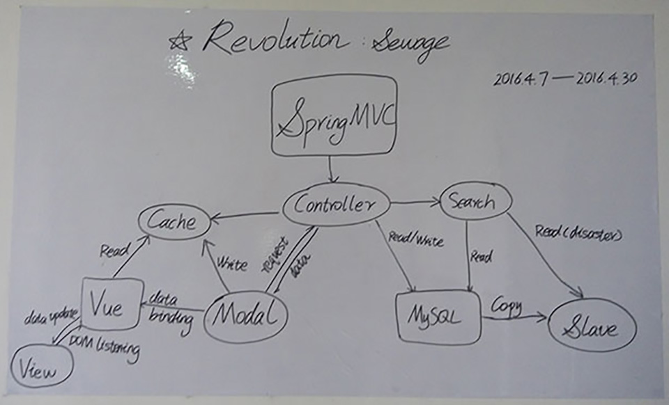

又一周过去了，这一周过得特别快。
没有 QQ，没有微信，没有各种杂音，张开眼就是代码的日子，实在很麻木。
没事的时候嫌自己闲得蛋疼，有事的时候三姑六婆全部都来找你，无论事大小。一件事都没做完，然后别的事就接二连三地找上门来了，现在才体会到“力量越大，责任越大。”
过去这周没有想太多，时刻都在写代码，生活从来都没有这么简单过，现在想起高三的日子，真的觉得高三很快活，高三每天都和好基友一起吃饭，一起刷题，一起打球，现在每天都是独来独往，也不再参与社交，朋友都很纳闷怎样才能找到我，老师给我发了 N 条 QQ 消息都没有得到我的回应，然后每次都要当面来找我，突然发现我还挺屌的嘛哈哈哈。
献上本周最满意的架构图一张：
